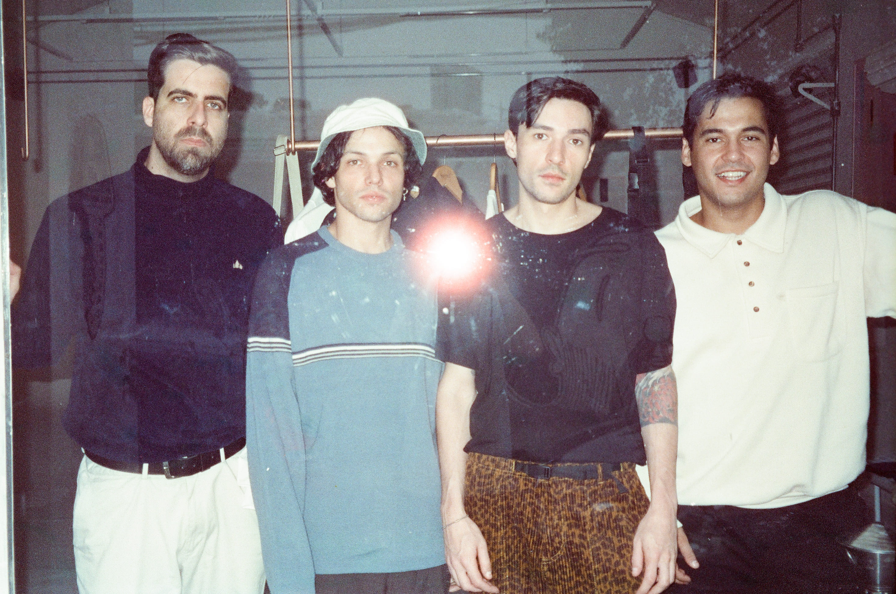

APRESENTAÇÃO
Terno Rei é uma banda paulistana de rock alternativo e indie rock formada em São Paulo em meados de 2010, com influências que vão do pós-punk dos anos 1980 ao BRock, chegando a Radiohead e Alanis Morisette.
A trajetória da banda Terno Rei é possui uma série de marcos significativos ao longo dos anos. Em 2012, eles estrearam no mercado fonográfico com o EP "Metrópole", seguido pelo lançamento do álbum "Vigília" em 2014. No ano seguinte, em 2015, lançaram o EP "Trem leva as minhas pernas", sendo o primeiro trabalho lançado junto com o selo paulistano Balaclava Records, do qual o grupo faz parte. Em 2016, vieram os singles "Sinais" e "Criança", além do álbum "Essa noite bateu como um sonho". No ano seguinte, em 2017, lançaram o EP "Low/Live (Ao Vivo)". Em 2018, continuaram com o lançamento dos singles "Luzes de Natal", "Solidão de Volta" e "Medo". Em 2019, lançaram o single "Dia Lindo" e o terceiro álbum "Violeta", seguido de uma extensa turnê pelo país, interrompida pela pandemia de coronavírus. Em 2020, continuaram com os singles "Pivete" com a banda Tuyo, "São Paulo – Acústico", "Amo Você" e "Acústico". Em 2021, lançaram os singles "Lilás" (cover de Djavan) e "INV007: Teu Inverno Faz Calor" com a banda Fresno, além da colaboração com Samuel Rosa do Skank no episódio de "Conexão Balaclava", que gerou o EP "Conexão Balaclava: Samuel Rosa e Terno Rei". Finalmente, em 2022, lançaram o álbum "Gêmeos", cujas composições foram feitas durante a pandemia de covid-19 e gravado no Nico’s Studio, em Curitiba (PR). A banda também teve a oportunidade de abrir o segundo dia do festival Lollapalooza Brasil em março de 2022, tocando músicas dos álbuns "Gêmeos" (2022) e "Violeta" (2019), após o adiamento do evento devido à pandemia.
Fonte: Wikipedia e Dicionário Cravo Albin da MPB
INTEGRANTES
Ale Sater
voz e baixo
Bruno Paschoal
guitarra
Greg Maya
guitarra
Luis Cardoso
bateria
DISCOGRAFIA
A Terno Rei já lançou 6 EPs, 4 álbuns e 14 singles. Confira os álbuns.
Escute o álbum mais recente